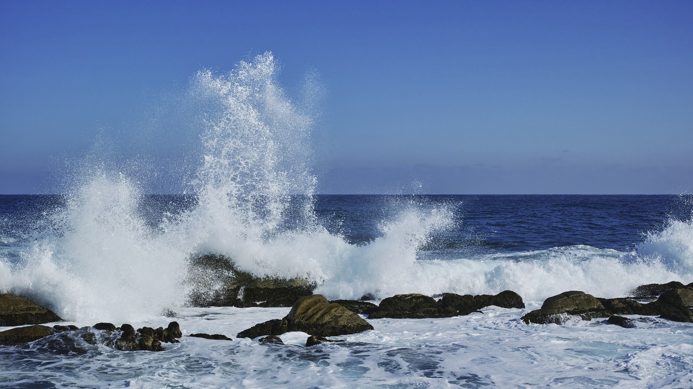

Gangneung Chodang Tofu Village was established to commemorate the production of Chodang Tofu for 400 years.
If you go to Chodang Tofu Village, there are Chodang Tofu restaurants and ice cream stores.
Heo Kyun's father, Heo Yeop, lived in present-day Chodang-dong, Gangneung-si,
and processed beans with a net to season them with clean seawater,
and when it was rumored to taste good, his pen name "Chodang" was added and originated from Chodang.

Currently, the birthplace of Samteojari,
Nanseolheon Heo Cho-hee and Gyosan Heo Gyun in Chodang-dong is preserved as Gangwon-do Cultural Heritage No. 5.
Since then, Chodang Tofu has been introduced.
Mt. Seorak belongs to the Taebaek Mountains.
It is the third highest mountain in South Korea after Hallasan Mountain and Jirisan Mountain.

It was designated as the fifth national park on March 24, 1970.
Seoraksan Mountain has a total area of 398.222 square kilometers.
Rock rock and Ulsan rock are famous.
The rock that shook was actually shaken, but now it is fixed with cement so that it cannot be shaken.
Looking at the East Sea from Ulsan rock, Sokcho-si, police and East Sea a sea view is spectacular.
Baekdamsa Temple and Sinheungsa Temple are located in Seoraksan Mountain,
of which Sinheungsa Temple has to pay a so-called admission fee of cultural assets.
A rail bike is a specially built bicycle along a railroad.
The Jeongseon Rail Bike is a railway bicycle that runs 7.2 km from Gujeolli Station in Jeongseon,
Gangwon Province to Aura.
Jeongseon is a place far from the city center,
but it has beautiful scenery and scenery that cannot be enjoyed in the city center.
It is popular because you can fully feel the scenery.
photo sources https://www.jeongseon.go.kr/tour/jeongseontour/attractions?contentSeq=100&mode=read
Haeparang-road
Road and sea waves in donghae, Gangwon Province.
There are well-organized trails and beaches.
If you follow the trail, you can see the beautiful scenery in turn.
If you go around Ayajin Port, which has a pretty name,
you will meet the rough coastal scenery of Cheongjeongjeong.
Passing through Songji Lake, the home of winter migratory birds,
you will find a traditional house called Yangtong House,
which can only be found in northern Gangwon Province.
Passing through the port of Gaun, Haeparang-gil has farming roads and Cheonbyeon-gil.
Passing Geojin Port, the representative fishing port of Goseong, you will find the sunrise trail.
If you climb the following gentle uphill, you will see Hwajinpo Lake and the sea in front of Hwajinpo.
Passing by Kim Il Sung's villa and Hwajinpo Maritime Museum, you can see the Unification Security Park.The 50-course Jejin checkpoint, the last of Haeparang-gil, to the Unification Observatory section is prohibited from walking.
You have to fill out a registration form and use a vehicle at the Unification Security Park.
Gwongeumseong Fortress is part of Mt. Seorak in Sokcho.
There is a legend that says Kwon Geum-seong fled his family to the mountains
and built a castle overnight to fight against his enemies when Kwon and Kim were in trouble.
It is said that it was also used as a refuge for the people during the Mongol invasion in 1254 (1254) of King Gojong of the Goryeo Dynasty.
At an elevation of 850m, there is a beacon pole.
A beacon mound in length 2km was pH of the sea can see the landscape of the city of Sokcho. Baekdu in the top, and donghae
Img Source http://picpen.chosun.com/view/picpenViewDetail.picpen?picpen_seq=34710
The Soyang River Skywalk is located in Yeongseo-ro, Chuncheon-si, Gangwon-do.
It is the longest skywalk facility in Korea, with a total length of 174 meters and a floor of 156 meters with transparent glass.
If you look down at the bottom of the glass, you can see a river, and it was scarier the farther it went.
It is located next to the Soyang 2 Bridge and the Soyang River maiden statue, which are landmarks of Chuncheon,
and the floor is stacked with three special reinforced glass sheets to add safety.
The entrance fee is 2,000 won and not expensive.

Img Source https://kr.trip.com/travel-guide/chuncheon-si/soyanggang-skywalk-65177707/